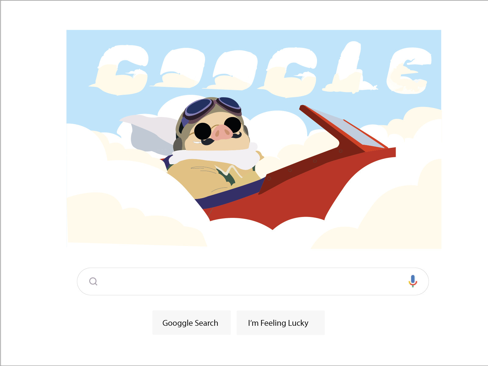
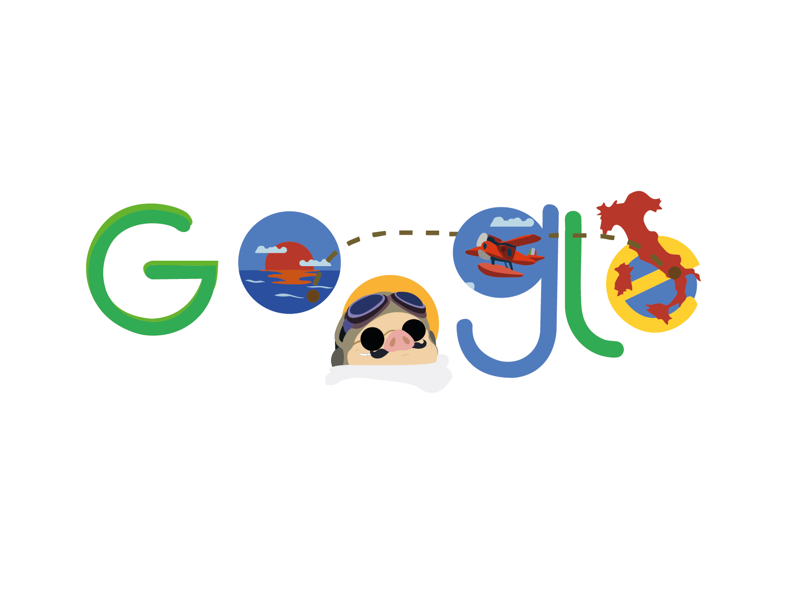

DOODLE GOOGLE
Création de deux Google Doodles. Un Google Doodle est une version spéciale et temporaire du logo Google, visible sur la page d’accueil du moteur de recherche. J’ai choisi de les réaliser sur le thème du film Porco Rosso de Hayao Miyazaki, car c’est un film que j’apprécie beaucoup.


